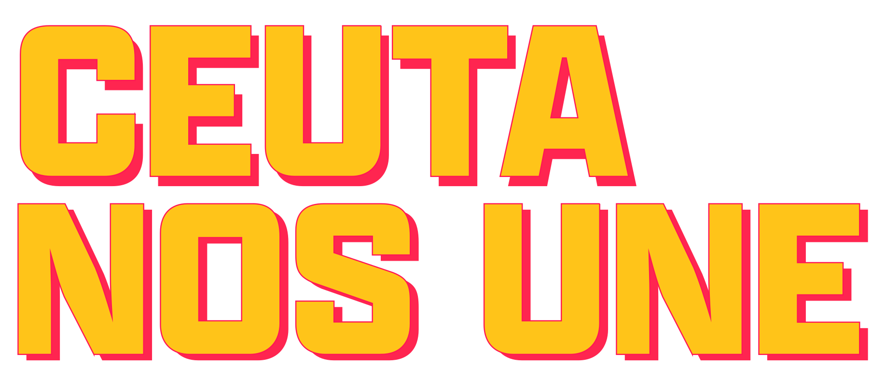

El fondo · lo que ha llegado no se puede usar todavía
«fondo ceuta nos une.svg» pesa 320 bytes y no dibuja nada. No es un fondo vectorial: es un envoltorio que apunta a una imagen que no venía en el envío.
Mándame ese PNG (2831 × 3727) y lo integro: lo recorto, lo comprimo a WebP y lo pongo de fondo. Tal como está, el navegador solo mostraría un hueco.
Mientras tanto, lo que la web ya tiene

La trama de semitono que ya usa la portada: puntos de oro sobre tinta, heredada del cartel. Es la textura del proyecto y no pesa nada, porque es CSS.
La misma trama sobre papel, con el escudo de Ceuta ampliado y desvaído detrás. Da profundidad sin una sola imagen, y en el móvil no cuesta datos.
Sea cual sea el fondo, hay una regla que no se puede saltar: detrás del texto tiene que quedar contraste suficiente para leerlo. La web va por 100 en accesibilidad y un fondo ilustrado a toda página es la forma más fácil de perderlo. Si el PNG es muy detallado, lo normal será usarlo en franjas concretas, no debajo del contenido.